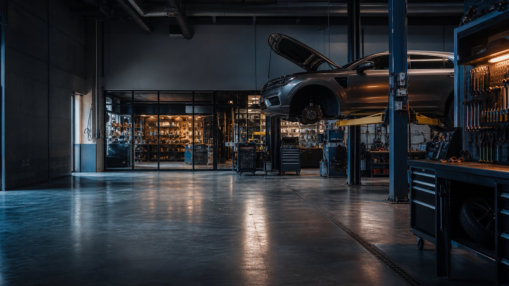
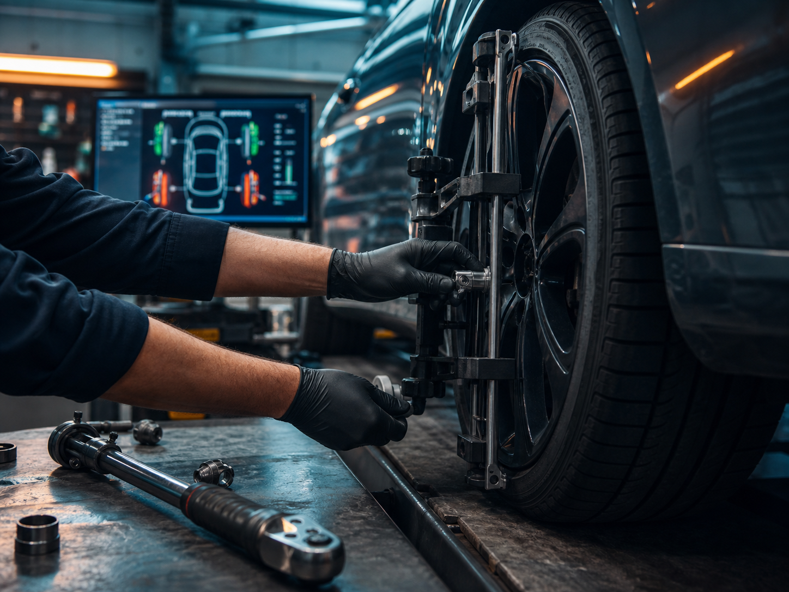

Сход-развал и колеса
Для машины, которую тянет в сторону, после ремонта подвески или перед сезоном.
- развал-схождение
- шиномонтаж
- проверка углов после ремонта
- быстрый заезд по записи

Автосервис в Электростали на Красной ул., 0/8
Авангард помогает с ТО, сход-развалом, ходовой, двигателем, тормозами, охлаждением, выхлопом и запчастями под заказ. Главный сценарий простой: позвонить, описать проблему, согласовать работу и приехать в удобное окно.
Быстрый старт
Кнопка подсветит задачу и покажет, что сказать администратору по телефону. Если точная причина непонятна, выбирайте ближайший симптом.
Услуги
Так проще понять, подходит ли сервис под вашу задачу, и быстрее объяснить проблему по телефону.
Для машины, которую тянет в сторону, после ремонта подвески или перед сезоном.
Плановое обслуживание без лишних работ: масло, фильтры, ремни, ГРМ.
Когда есть стук, люфт, скрип, биение или машину стало вести нестабильно.
Ремонт узлов с предварительным осмотром и согласованием состава работ.
Системы, где важно быстро найти причину и не менять исправные детали.
Работы по выхлопной системе, катализаторам и дополнительному оборудованию.
Как снижаются риски
Основные страхи клиента - переплата, непонятный срок и сомнение в качестве. Поэтому на странице все действия ведут к звонку: по телефону проще сразу описать задачу, свободное окно и детали.

В отзывах клиенты отдельно отмечают, что администратор понятно объясняет цену работ и запчастей.
Есть предварительная запись. По отзывам, при свободном окне иногда принимают сразу.
Можно не бегать по магазинам: в карточке указаны запчасти и комплектующие под заказ.
В особенностях указаны гарантия, постоплата, карты, QR, СБП, наличные и безналичный расчет.
Отзывы
«Администратор все объясняет понятно и доходчиво, сколько стоит та или иная работа.»
«Без лишних услуг, честные цены, мастера всегда подскажут и покажут.»
«Честно все рассказали, все объяснили, все сделали в срок.»
«Большой сервис, много подъемников, практически всегда можно попасть на ремонт сразу.»
«При мне определили неисправность, заказали деталь, поставили. Главное - не разводили на доп. работы.»
«Не надо бегать по магазинам искать запчасти: согласовали цену за детали и можно спокойно ждать.»
В отзывах есть и редкие замечания по ожиданию или отдельным работам. Чтобы снизить риск недопонимания, заранее согласуйте запись, перечень работ, детали, итоговую стоимость и проверку при выдаче автомобиля.
Смотреть карточку на Яндекс.КартахДля визита
Перед приездом лучше уточнить свободное окно и наличие нужных деталей. Автоэлектрика, кузовной и малярный ремонт не выделены в карточке услуг, поэтому такие задачи стоит проверять по телефону.
Звонок
Телефон - самый быстрый путь: администратор уточнит симптом, подскажет свободное окно и сориентирует, какие детали лучше подготовить.
Ближайший прием: пт с 09:00
Контакты
Данные взяты из карточки Яндекс.Карт. Перед визитом лучше уточнить актуальность по телефону.